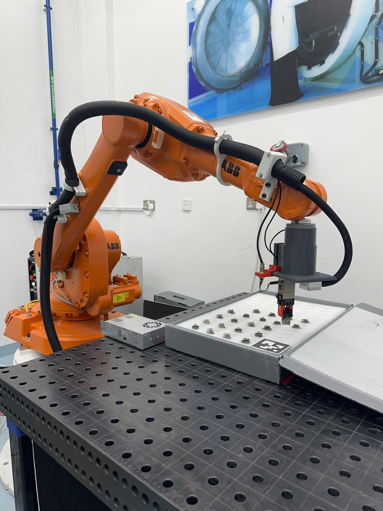

ABB IRB 1600
TECHNOLOGY
The ABB IRB 1600 is a highly advanced robotic arm known for its precision, flexibility, and efficiency. Developed by ABB, a leading robotics and automation company, the IRB 1600 is widely utilized in various industrial applications, with its capabilities making it particularly well-suited for pick and sort tasks.
This robotic arm is equipped with cutting-edge technology, allowing it to handle complex tasks with speed and accuracy. Its versatility makes it a popular choice in industries such as manufacturing, logistics, and warehousing, where pick and sort operations play a crucial role in optimizing efficiency and reducing manual labor.
